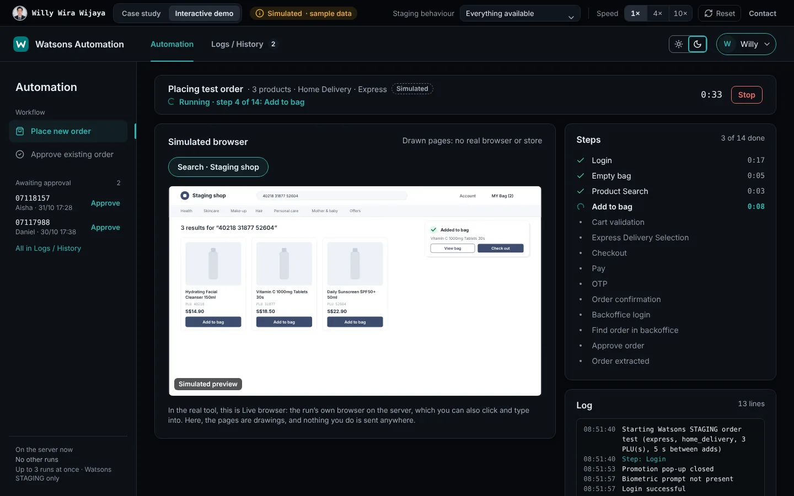
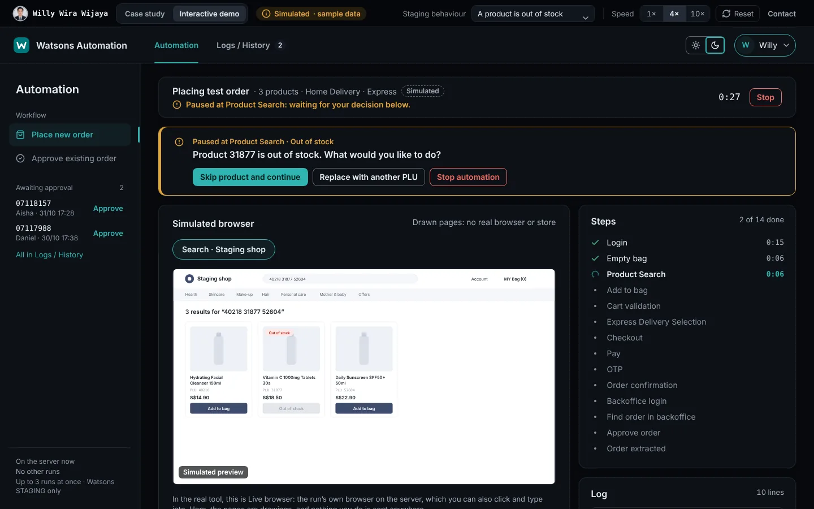
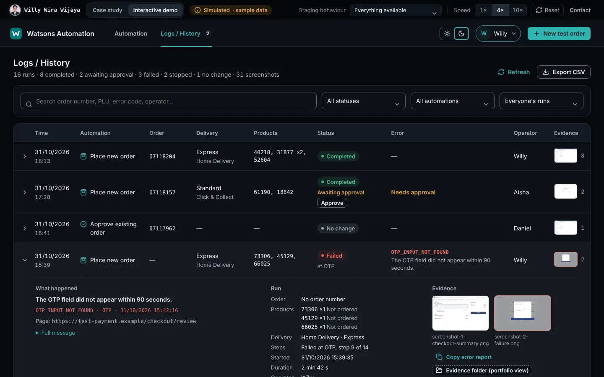

Asks instead of failing
If a product is out of stock or can’t be delivered, the run pauses, offers only the valid choices and carries on from the same step. One problem product doesn’t waste the whole order.
Like the tool itself, the demo is built for screens 768 px wide and up. On this screen, the case study shows the main steps in screenshots.
Portfolio demo by Willy Wira Wijaya: simulated runs with sample data. Not an official Watsons product or website.
| Details | Time | Automation | Order | Delivery | Products | Status | Error | Operator | Evidence |
|---|
Portfolio demo by Willy Wira Wijaya: simulated runs with sample data. Not an official Watsons product or website.
The real app asks for your WatsonsTester user name and password. This demo has sample users instead.
Case study · Workflow automation
An internal web tool that runs test orders on the Watsons Singapore staging site, a test version of the online shop. It lets colleagues check changes to checkout, promotions and delivery without doing every step by hand.
A portfolio page by Willy Wira Wijaya. Not an official Watsons product or website. The demo is simulated: it creates no orders and connects to no company system.
The problem
Changes to checkout, promotions or delivery options are checked with test orders on the staging site. A useful test goes all the way: the order is placed in the shop, paid with a test card, and approved in the backoffice (the shop’s admin system) until it reaches the warehouse.
Every combination of products and delivery options meant repeating the whole sequence by hand.
Shop
Test payment
Backoffice
The same 14 steps are what the automation runs and reports on.
The solution
The person still chooses what to test, and decides what to do when a product is a problem. The tool does the clicking, the waiting and the record-keeping.
Enter product codes and the delivery option in a web page. The run starts only when the inputs are valid and confirmed.
The tool signs in, fills the bag, picks the delivery, checks out and pays with the test card.
It finds the order, approves it once and follows it until it reaches the warehouse.
The order number, steps, screenshots and log go into Logs / History.
If a product is out of stock or can’t be delivered, the run pauses, offers only the valid choices and carries on from the same step. One problem product doesn’t waste the whole order.
Steps with their times and a colour-coded log as they happen, with the run’s browser shown in the page.
The failed step, an error code, the page and a screenshot. One click copies the report for Teams or email.
Every run with its status, order number, products, decisions and who ran it, with search, filters and CSV export.



My role and technology
I designed, specified, tested and deployed the tool. The implementation was AI-assisted.
I use AI-assisted development to build faster. I own the problem analysis, requirements, design decisions, code review, testing, security and deployment.
How I work, on this project and others
The staging address is fixed in code and covered by tests, and the browser refuses to open any other site.
A retry first checks what is already in the bag, nothing is retried after checkout, and Approve Order is clicked at most once.
The tests wait for what the page actually shows, such as the bag count or the delivery options, with a limited number of attempts.
Results and next steps
No time savings, usage figures or other numbers are claimed here: they haven’t been measured yet.
Measure it. Time three manual test orders against three tool runs, then use the history’s CSV export for runs per week and the most common errors.
A number appears on this page only once it is measured, with its date and sample size.
The same approach fits test orders, approvals, data entry or checks that span several systems: a simple page your team can run, live progress, and a record of every run.